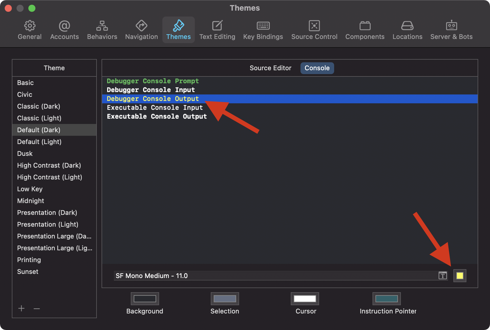

Make Debugger Console Output Stand Out
Printing in Breakpoints
Breakpoints are very powerful. One feature of breakpoints I use the most is to print the value of a variable. This can be done by adding the Debugger Command po myVariable to a breakpoint like this:
Debugger Console Output Color
To make this output easier to find in the debug output, we can change its color. Open Preferences of Xcode and navigate to ‘Themes / Console’. Then change the color of ‘Debugger Console Output’ to the color you like:
After you have done that, the po output from breakpoints can easily be differentiated from the noise: